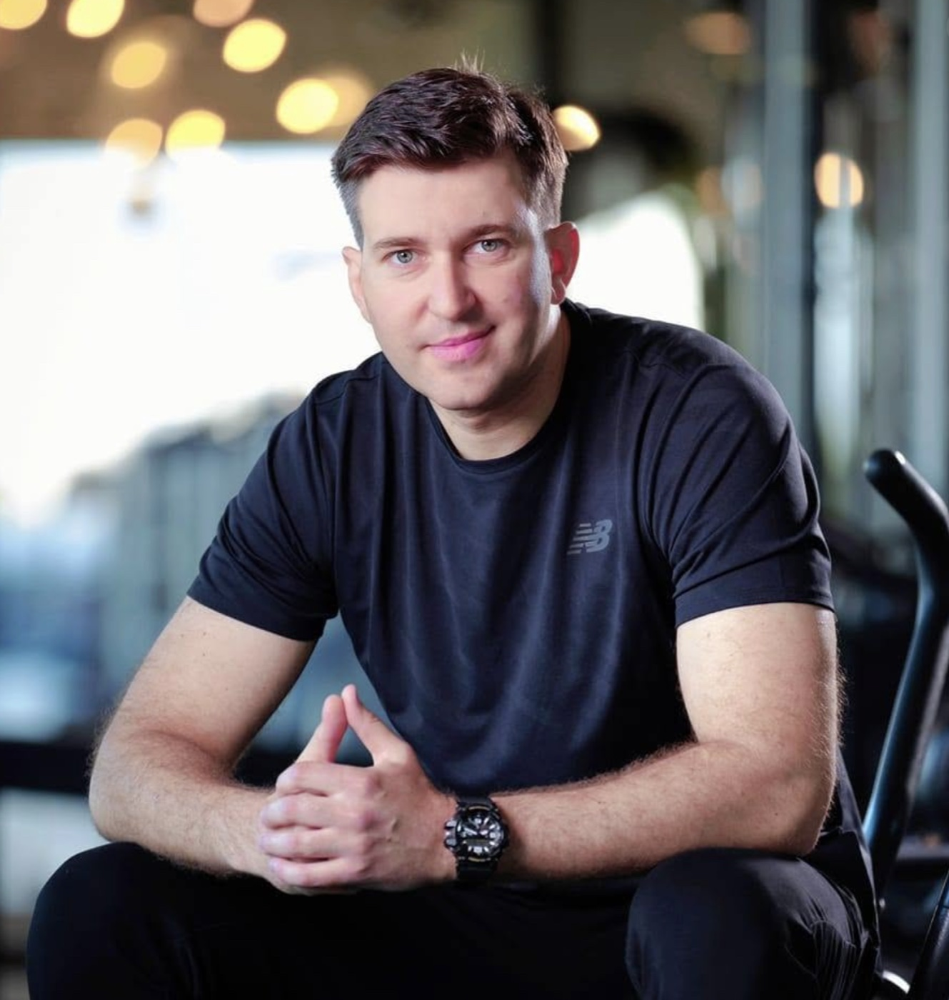
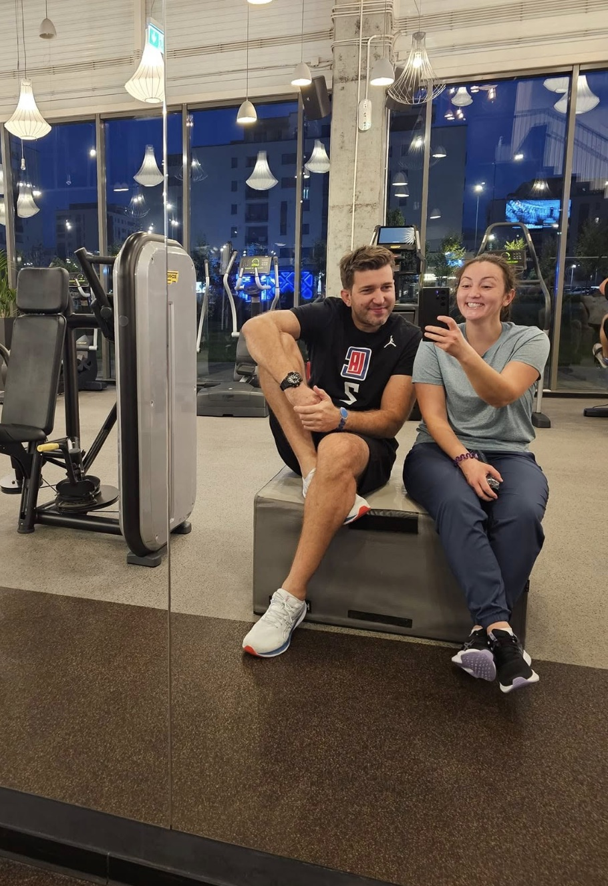

Slăbire & remodelare
Mișcare, structură și consecvență adaptate stilului tău de viață.
Antrenor personal · Brașov
Antrenamente individuale, adaptate nivelului, obiectivelor și programului tău — la Belaqva Coresi, Brașov.

Recomandat de clienți din Brașov
Vezi recenziile *Ratingul și numărul total vor fi confirmate înainte de publicare.Obiectivul tău
Începem de la nivelul tău actual și construim un program realist, sigur și suficient de motivant încât să te ții de el.
Mișcare, structură și consecvență adaptate stilului tău de viață.
Exerciții executate corect, progresiv și cu obiective măsurabile.
Un corp care se mișcă mai bine și o rutină care îți dă energie.
Pregătire specifică pentru Academie și Școlile de Subofițeri.
Vezi programul
Antrenament 1-la-1Antrenorul tău
Sunt Cătălin Tătulescu, antrenor personal și fost sportiv de performanță. Te ajut să construiești rezultate pe care le poți păstra, fără programe copiate și fără promisiuni imposibile.
Experiență sportivăFost jucător profesionist de baschet la Steaua București.
Pregătire completăFitness, anatomie, fiziologie și principii de nutriție.
Atenție realăFiecare exercițiu este adaptat și urmărit îndeaproape.
„Rolul meu nu este doar să-ți arăt exercițiile, ci să construim o rutină pe care o poți păstra.”
— Cătălin TătulescuSimplu și clar
Nu trebuie să fii deja în formă ca să începi. Trebuie doar să știm unde vrei să ajungi.
Despre obiective, program și ce te-a oprit până acum.
Vedem nivelul actual, mobilitatea și punctele de pornire.
Primești un program potrivit corpului și ritmului tău.
Măsurăm progresul și adaptăm permanent antrenamentele.
Locul în care lucrăm
Un spațiu complet echipat, potrivit atât pentru cei aflați la început, cât și pentru obiective avansate de forță și condiție fizică.
Atmosfera reală
În versiunea finală, această galerie va folosi exclusiv fotografiile lui Cătălin, ale sălii și ale clienților care și-au dat acordul.
Recenzii Google
„Are foarte multă răbdare și știe exact când poți mai mult. De la prima ședință mi-am dat seama că nu aș fi reușit singură.”
Recenzie publică · fragment„Cu răbdare, profesionalism, flexibilitate și seriozitate, a contribuit la noua mea atitudine de a iubi fitness-ul.”
Recenzie publică · fragment„Un profesionist în adevăratul sens al cuvântului și o persoană deosebită.”
Recenzie publică · fragment„Antrenamente dinamice și personalizate. M-am simțit foarte bine atât la antrenament, cât și după.”
Recenzie publică · fragmentProgram specializat
Un program construit pentru cerințele Academiei de Poliție și Școlilor de Subofițeri: rezistență, viteză, tehnică și simulări cât mai apropiate de probă.
Primul pas
Scrie-mi câteva cuvinte despre obiectivul tău și stabilim împreună următorul pas.
Coresi Shopping Resort
Str. Zaharia Stancu 1, Brașov